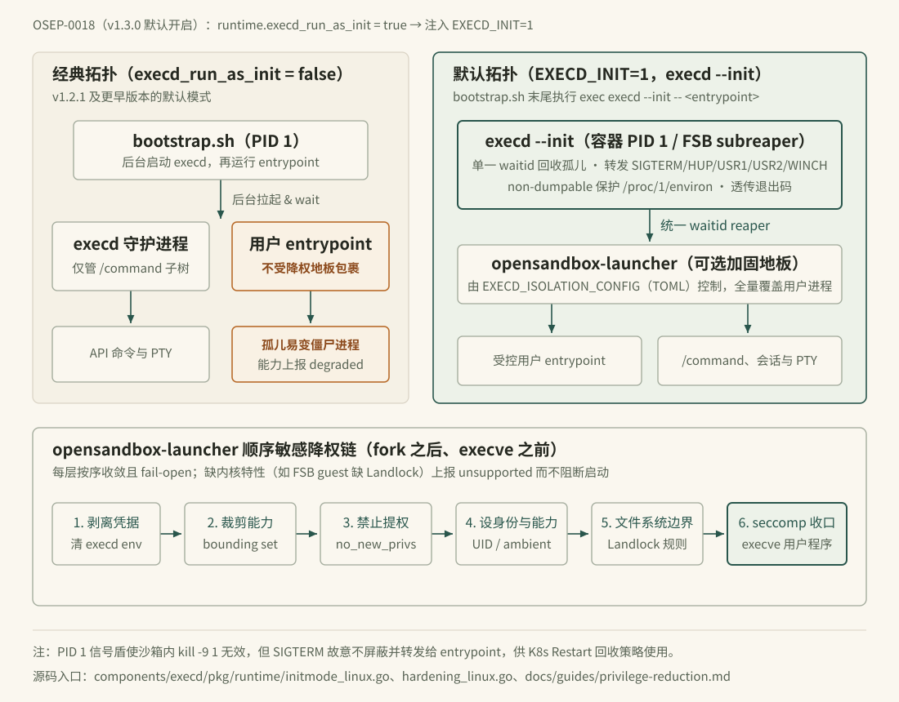

数据平面：execd-as-init、命令流与文件语义
把执行守护进程塞进不可信沙箱里，最容易出事故的地方集中在进程树失控和流式边界含糊：容器里跑了几百条 Agent 命令后堆满僵尸进程；主进程被 kill 却传不出真实退出码；一条没换行的 200 MB 日志直接把守护进程吃 OOM；文件覆盖上传写到一半断网，把仓库里原本完好的配置文件截断成半截垃圾。
components/execd/（Go + Gin，默认监听 44772）是 OpenSandbox 的沙箱内执行平面。它随 Docker 暂存、Kubernetes execd-installer init 容器或 Fast Sandbox 黄金镜像进入沙箱，在 release-1.3.0 里更是直接站到了进程树顶端。
OSEP-0018：execd-as-init 成为默认拓扑
在 1.2.1 及更早版本中，bootstrap.sh 自己当容器 PID 1，把 execd 丢在后台，再拉起用户 entrypoint。这套经典拓扑有三个硬伤：孤儿进程容易积成僵尸；外部发给容器的信号和退出码很难精准透传；更麻烦的是，用户 entrypoint 不经 execd 启动，哪怕镜像里开启了进程降权地板，入口进程依然拿着完整的容器上限权限在跑，能力探针只能老实回报 degraded。
从 1.3.0-rc.1 起，runtime.execd_run_as_init 默认值改为 true。服务端在 Docker、Kubernetes 和 Fast Sandbox 模板渲染时注入 EXECD_INIT=1，bootstrap.sh 末尾执行 exec execd --init -- <entrypoint>，让 execd 直接成为容器 PID 1（在 Fast Sandbox 模板里则是 guest init 下的 subreaper）。

翻开 components/execd/pkg/runtime/initmode_linux.go（801 行），几个实现细节直接解释了它为什么靠谱：
- 单一
waitid回收器：全进程只有唯一一个 reaper 调用SYS_WAITID，绝不混用 Go 标准库的os/exec.Cmd.Wait，并在启动子进程与注册子进程之间持有注册表锁，从结构上消灭启动与回收的竞态。无主孤儿由 reaper 自动回收并记日志。 - 精准信号处理与 PID 1 信号盾：
execd转发SIGTERM、SIGHUP、SIGUSR1、SIGUSR2、SIGWINCH给用户entrypoint，并把入口退出码原样透传给底层运行时。作为容器 PID 1，内核天然屏蔽了沙箱内发出的kill -9 1；而SIGTERM故意不屏蔽，收到后转发给入口进程并在默认 10 秒宽限期（initShutdownGrace）内收尾，这是 KubernetesRestart池回收策略依赖的停止契约。同时execd把自身标为non-dumpable，防止沙箱内代码通过/proc/1/environ偷走它的访问令牌。 - 配合
opensandbox-launcher落实进程降权地板：镜像里通过EXECD_ISOLATION_CONFIG指定一份 TOML 配置（如仓内自带的components/execd/configs/isolation.hardened.toml）并开启[hardening] enabled = true后，execd通过原生辅助程序opensandbox-launcher拉起所有用户代码进程（涵盖镜像 entrypoint、/command、Shell 会话与 PTY）。在fork到execve之间按固定顺序剥离 execd 凭据环境变量、裁剪 capability bounding set、设置no_new_privs、切换身份与保留能力、加载可选 Landlock 文件系统白名单、最后安装 seccomp 系统调用拒绝列表。配置语法错误在启动期致命退出，运行时缺失内核特性（例如当前 Fast Sandbox guest 内核不含 Landlock）则按 fail-open 契约跳过并在能力接口中如实标为unsupported。
沙箱级令牌与预热复用时的绑定门禁
除永远开放的 /ping 和 /ready 外，所有业务端点共享沙箱级令牌 X-EXECD-ACCESS-TOKEN。
为了支撑预热池里的 Pod 跨分配安全复用，components/execd/pkg/binding/ 实现了一道原子门禁：暖 Pod 分配给具体沙箱时，平台下发 per-allocation 绑定（沙箱 ID、环境变量、访问令牌、生命周期钩子），execd 在完成原子应用前，除健康探针外的所有业务端点一律返回 503。上一任沙箱的环境、凭据和遥测归属因此绝不会漏进下一任。
命令执行、16 MiB 切分与 CommandTimeout
/command 同时接受 shell 语法和直接 argv（绕过 shell 解析，适合拼入不可信参数）。前台走 SSE 实时推流，后台立即返回并保留已完成任务日志 24 小时（运行中任务永不被清）。
围绕流式命令执行，最近两个版本补上了几处实打实的线上防爆机制：
- 前台超时独立为
CommandTimeout：1.3.0-rc.2把前台命令超时事件名从宽泛的CommandExecError拆成了专门的CommandTimeout（退出码-1），并在日志、traceback 和状态里记录请求的超时时长，调用方不再靠解析字符串猜超时。 - 单行超 16 MiB 按 UTF-8 边界切块：
components/execd/pkg/runtime/output_limits.go将扫描行上限钉在16 * 1024 * 1024字节。以往一条 200 MB 无换行输出会直接把execd撑爆 OOM，现在超长行按合法 UTF-8 字符边界分段推送，仅最后一段携带原始行尾。 - 三条契约底线：原始行尾（
\n/\r/\r\n）原样透传；前台成功结束携带execution_complete与exit_code: 0；终止事件前断流视为结果不确定。为照顾老版本 Kotlin/JVM 客户端（sandbox-api < 1.0.18）因kotlinx-serialization未知字段触发AbstractMethodError挂死的旧账，保留了默认关闭的EXECD_SSE_LEGACY_COMPAT开关，不过官方推荐直接升级带阴影依赖的新版 SDK。
有状态 Shell 会话（/session）在多次调用间保留环境变量与工作目录，合并 stdout 与 stderr 为单路事件流，并在最小镜像里自动从 bash 回退到 POSIX sh；1.2.1 起删除 Bash 会话会连带终止所有仍在运行中的命令。
代码执行、PTY 与文件系统的防呆边界
Jupyter 代码上下文（/code）。execd 托管持久 Jupyter 内核，支持在 JUPYTER_TOKEN 未设时自动发现运行时令牌文件。1.3.0-rc.2 为 /code 增加了回复锚定收尾超时 --jupyter-reply-finalize-timeout（默认 2 秒，输出静默时重置），防止内核完成信号丢失导致 SSE 流永不关闭、会话锁死锁。此外，非法工作目录或非内核语言上下文查询现改为立即返 400，不再白白重试 5 分钟后返 500。
交互式 PTY（/pty），采用一持有者（可写键盘）、多观看者（回放历史 + 实时只读）的 WebSocket 模型。浏览器无法自定义 WS 握手头，因此允许在子协议里同时提供 opensandbox-pty 与无填充 base64url 编码的凭据子协议；但只要请求带了显式 X-EXECD-ACCESS-TOKEN 头，即便值为空或非法也绝不回退到子协议。关闭 PTY 时先发 SIGHUP 并等待最多 500 ms 再清理进程组，兼容 nohup 等忽略 HUP 的后台作业。
文件系统（/files/*）与隔离会话（/v1/isolated/*）。文件上传采用先写同目录隐藏暂存文件（.osb-upload- / .osb-staging-）再 rename 原子替换，避免断流截断旧文件；目录只读但目标文件可写时回退到原地截断写入。1.3.0-rc.2 堵住了两处路径漏洞：批量重命名在移动任何项前先整体校验，且所有文件 API 一律拒绝展开后的空路径（关闭了 {"": {"mode": 700}} 误改守护进程工作目录权限的洞）；同时未命中变量的 $ 字面量（如 Java 内部类 Outer$1.class）保持原样不再错误展开。
Linux 下可信后端还能通过 /v1/filesystem/{uid}/{gid} 在独立 worker 进程里按指定 UID/GID 执行文件操作（不继承 execd 补充组与环境变量），但文档写得很直白：它没有独立 mount namespace，不是租户隔离边界。
隔离会话（/v1/isolated/*）基于 bubblewrap 为每次会话创建私有挂载命名空间，创建耗时约 100 ms，后续 run 复用同一进程。diff/commit 仍未实现并返回 503，/v1/isolated/capabilities 如实上报支持状态。
OTLP 磁盘指标与共享反向代理池
除了 CPU 与内存快照（/metrics）以及在 1.3.0-rc.2 修正为准确每秒推送一次的 /metrics/watch，execd 的 OTLP 遥测管道（components/execd/pkg/telemetry/init.go）新增了磁盘指标：
- 每挂载点用量仪表
execd.system.disk.usage_bytes与execd.system.disk.total_bytes（带mountpoint/fstype/source属性），每次挂载点 stat 均设 2 秒硬超时，防止卡死的网络挂载拖垮整个采集管线； - 累计 IO 计数器
execd.system.disk.io.bytes与execd.system.disk.io.operations，优先读取沙箱 cgroup 统计，缺失时回退到/proc/diskstats。
最后，支撑单端口复用的内置反向代理 /proxy/{port} 在 1.3.0-rc.1 改用共享上游连接池，解决了以往按请求新拨连接并滞留 socket 600 秒的泄露问题。
源码入口
| 路径 | 看什么 |
|---|---|
components/execd/pkg/runtime/initmode_linux.go |
OSEP-0018 单一 waitid reaper、信号转发与 PID 1 退出语义（801 行） |
components/execd/pkg/runtime/hardening_linux.go |
opensandbox-launcher 降权链与能力探测上报（685 行） |
components/execd/pkg/runtime/output_limits.go |
16 MiB UTF-8 边界行切分常量与逻辑 |
components/execd/pkg/web/controller/command.go |
前台 SSE、CommandTimeout 与后台日志管理 |
components/execd/pkg/web/controller/pty_ws.go |
PTY 持有者/观看者模型与子协议鉴权 |
components/execd/pkg/telemetry/init.go |
OTLP CPU/内存/磁盘指标导出与 2 秒挂载超时 |
docs/guides/privilege-reduction.md |
EXECD_INIT=1 与 isolation.hardened.toml 落地指南 |
oseps/0018-execd-as-sandbox-init.md |
execd-as-init 设计提案 |